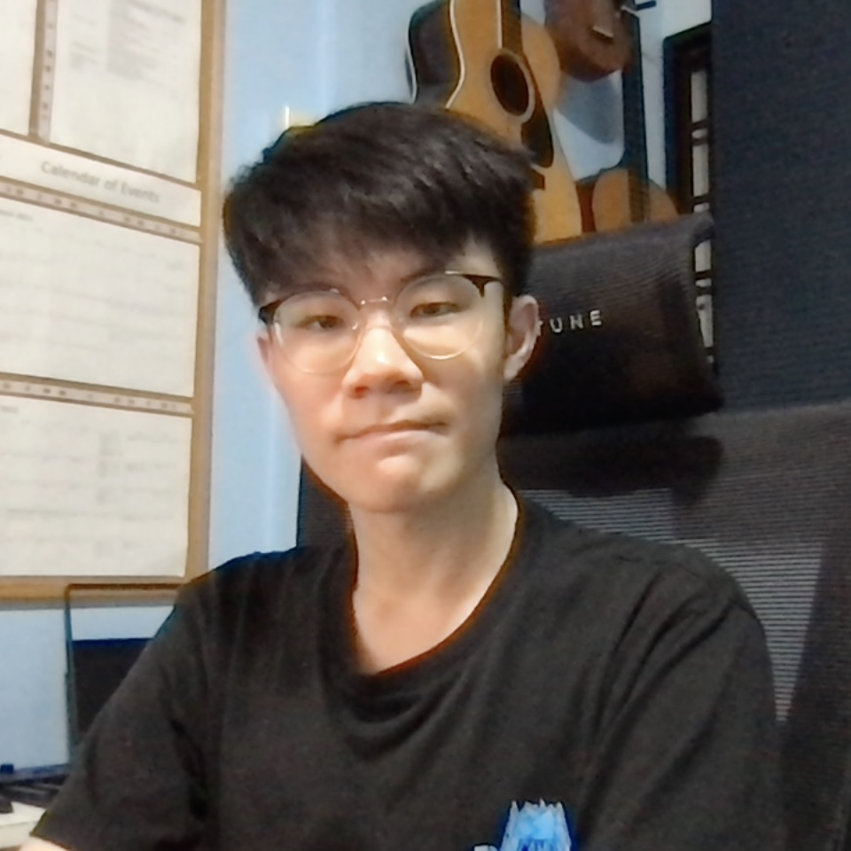
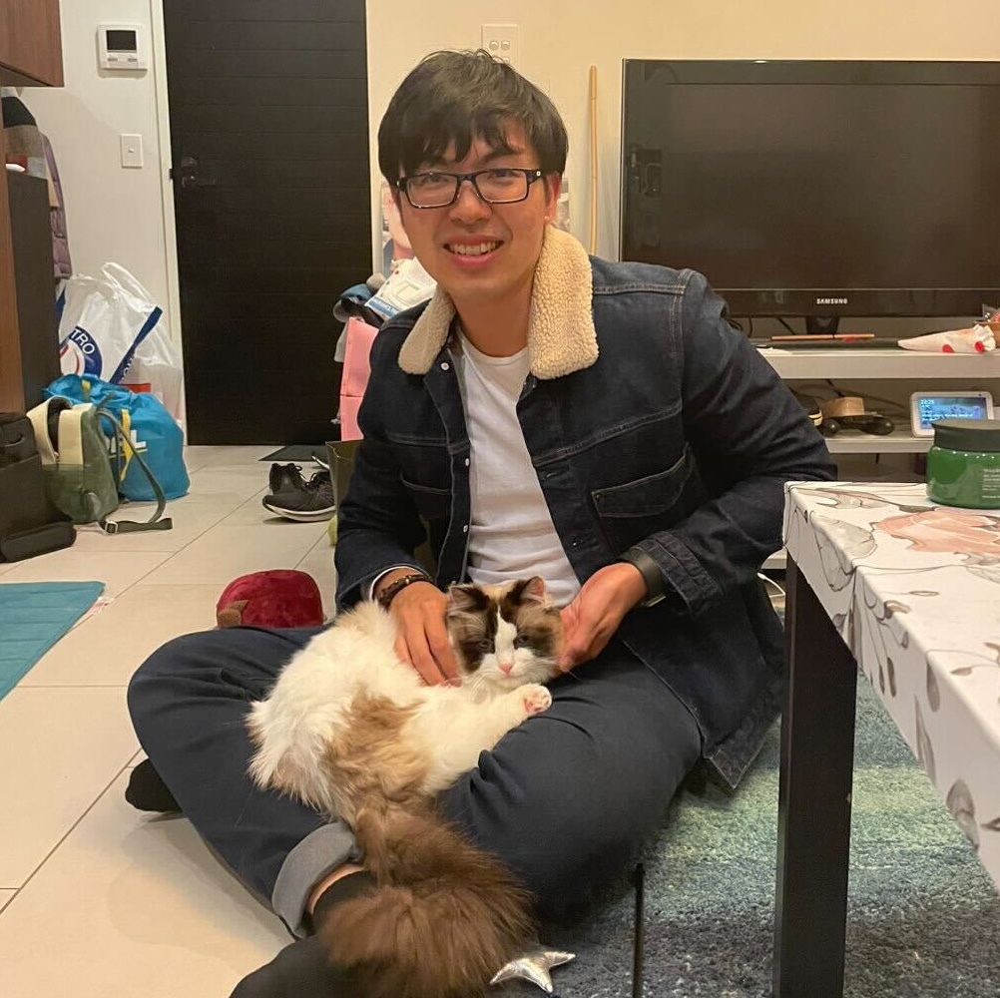
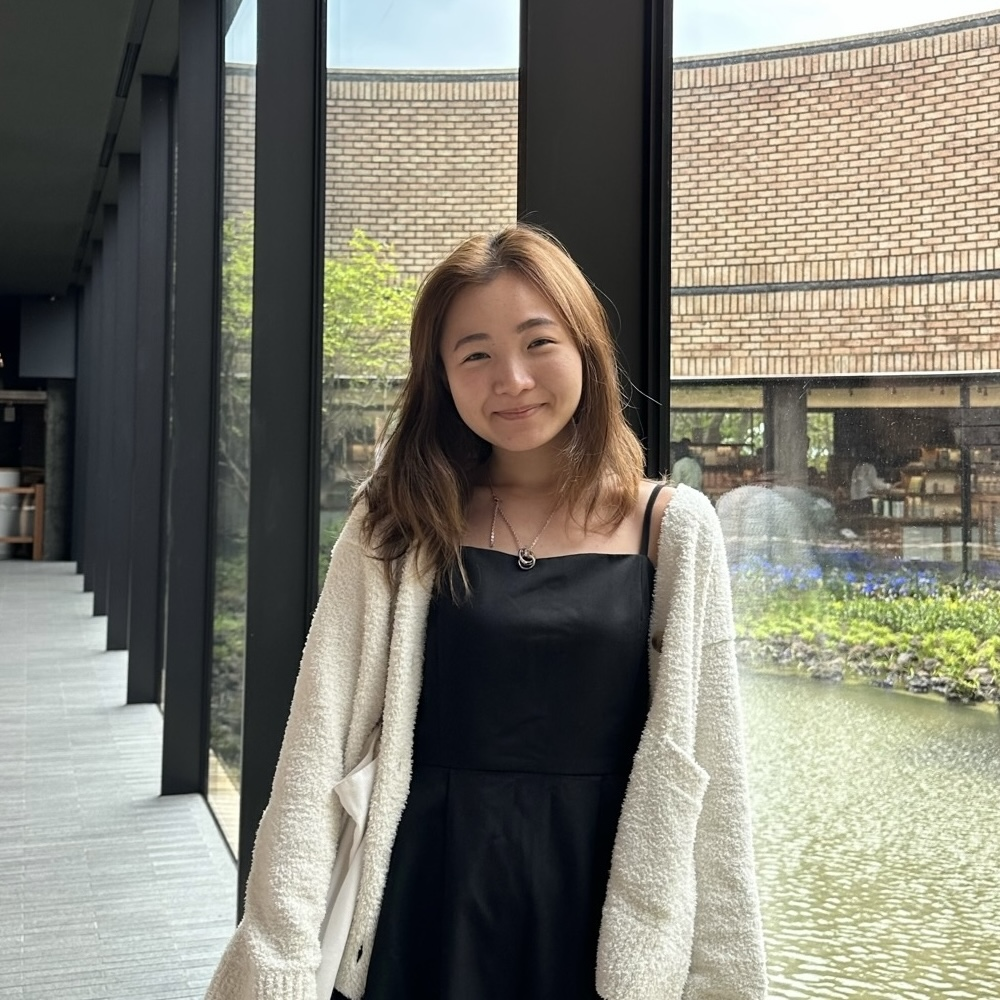
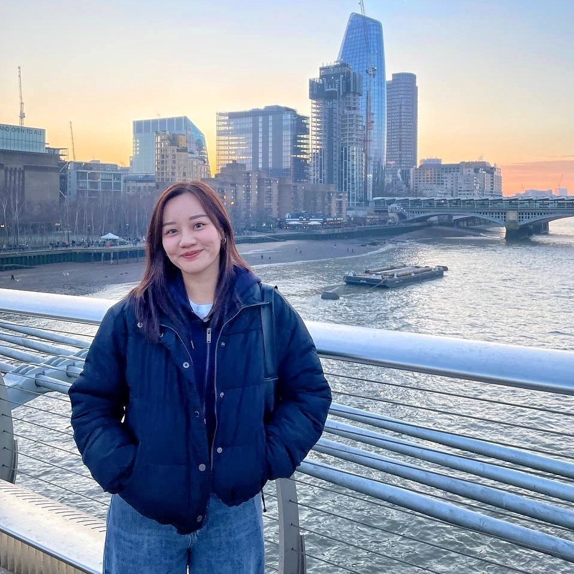
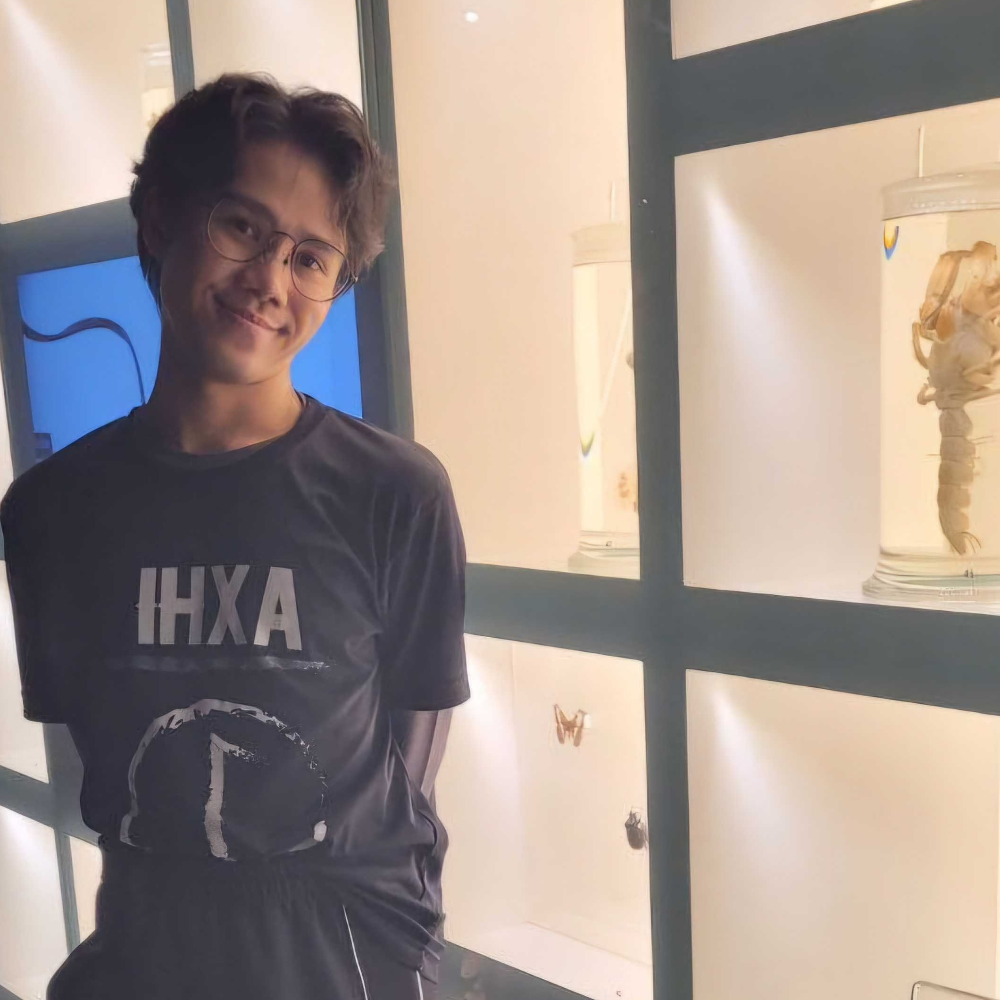
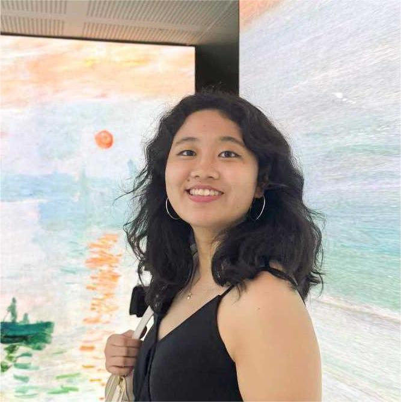
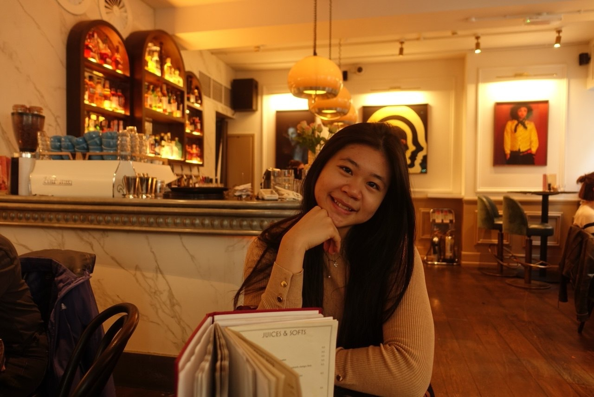

Voon Hao Lew (Senior RA)

I currently hold a Bachelor of Psychological Science (Hons) from James Cook University. I also have a background in the biomedical sciences.
As the world grows to appreciate a more holistic view on health and wellbeing, I believe it is important to understand the interplay between the various domains of health. My research interest is in the interactions between physiological health and psychological health. I hope to learn more about the neural bases of various psychological disorders, as well as the effects of physical health and activity on mental health. I aspire to contribute to current efforts in combating mental health issues through research.
Outside of work, I enjoy playing computer games, making music, and watching television shows. I also enjoy finding new ways to keep things neat, organized, and minimalistic.
Wen Liang Loh

I graduated with a Bachelor of Arts (Honours in Criminology) and a Graduate Diploma of Psychology.
I am interested in the brain networks of a child or young adult, e.g. how their lifestyle factors can influence their executive functions, emotional and mental well-being.
In my free time, I enjoy exploring the different parts of Singapore.
Jia Wen Fiona Goh

I graduated with a Bachelor of Social Sciences in Psychology from the National University of Singapore.
As a Research Assistant in the lab, I am interested to learn more about how the brain may relate to neurodegenerative disorders and overall well-being!
During my free time, I enjoy baking and exploring new places in Singapore.
Phoebe Si Qi Chia

I graduated with a Bachelor of Arts in Psychology from Nanyang Technological University and a Master of Science in Clinical Neurodevelopmental Sciences from King’s College London.
My research interests include cognitive neuroscience, application of neuroimaging techniques, and understanding neurodevelopmental conditions. As a Research Associate, I seek to develop my research interests while contributing to current research conducted in the lab.
I enjoy travelling, swimming, and going to museums in my leisure time!
Balagtas Jan Paolo Macapinlac

I graduated with a Bachelor of Social Sciences (Honours) in Psychology from Nanyang Technological University.
I believe the brain to be the physical seat of mind. I am interested in how behaviour and cognition manifests itself in neural correlates across healthy, clinical and subclinical bodies, including the brain.
In my free time, I visit local museums, explore the lesser known parts of Singapore and when I’m really feeling up for it, I try my chops at artistic endeavours.
Sharon

I graduated with a Bachelor of Engineering (Honours) in Bioengineering from Nanyang Technological University.
My passion lies in discovering the secrets of the brain, specifically how different regions relate to neurological disorders, and applying machine learning models to this field.
In my free time, I enjoy travelling, taking photography at different places in Singapore and learning new art crafts.
Shu Han

I graduated with a Bachelor of Science (Honours) in Biological Sciences and Psychology from Nanyang Technological University.
While my foundational background is in developmental psychology and cognitive neuroscience, I am currently using my time in the lab to explore new dimensions of neuroimaging and experimental research.
I am fascinated by how the brain adapts to its environment, and I am eager to delve into different methodologies to see how brain networks relate to both clinical outcomes and everyday well-being. I hope to use this journey of discovery to help shape my long-term research directions.
Outside of work, you can find me chilling with five cats at my yoga studio, freediving in the open blue, or practicing a new language—usually with a good cup of coffee in hand!